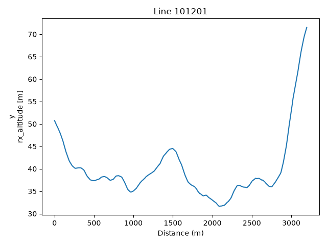
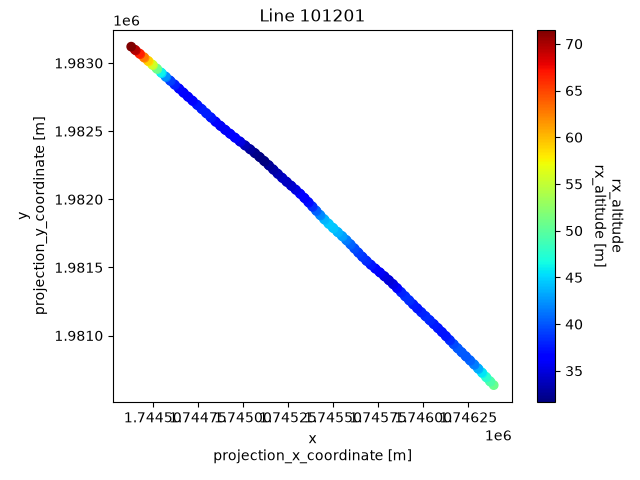

Note
Go to the end to download the full example code.
Workbench XYZ
This example supports data and models read from Aarhus Workbench XYZ files. What’s unique about these files is that metadata is embedded in the header of the data files, such as the electromagnetic gate times.
The workbench file handler detects when an XYZ file matches this format and parses out the metadata to be joined with additional metadata passed from a YAML file.
Workbench inversion results come as a triplet of .dat, .inv and .syn exports sharing a base filename. Passing any one of the three is enough: gspy locates the other two and combines all three into one dataset in the GS file.
Source Reference: U.S. Geological Survey, 2024, Airborne electromagnetic and magnetic survey of Delaware Bay and surrounding regions of New Jersey and Delaware, 2022 (ver 2.0, April 2025): U.S. Geological Survey data release, https://doi.org/10.5066/F7J96592.
import matplotlib.pyplot as plt
from os.path import join
import numpy as np
import gspy
Initialize the Survey
1dataset_attrs:
2 title: Airborne electromagnetic and magnetic survey of Delaware Bay and surrounding regions of New Jersey and Delaware, 2022
3 institution: USGS Geology, Geophysics, and Geochemistry Science Center
4 source: SkyTEM provided raw data, USGS generated inverted resistivity models
5 history: Data acquisition 07/15/2022 - 08/03/2022 by SkyTEM Canada Inc. AEM and magnetic data processing by SkyTEM Canada Inc. 08/2022 - 10/2022. Raw and minimally processed AEM data, and processed magnetic data, received by USGS from SkyTEM Canada Inc 10/2022. Minimally processed AEM data were exported to netCDF using GSPy version 1.0.1 11/2023. Minimally processed binary data received from the contractor were imported into the Aarhus Workbench software (v 6 - 2024.2, Aarhus Geosoftware, Aarhus, Denmark) and processed. Filters were applied to inclinometer and spatial positioning data to smooth raw data and remove sensor dropouts. Altimeter data were filtered, smoothed, and manually edited to correct false altitudes associated with trees, open water, and other obstacles, resulting in processed altitude representative of the distance between the AEM sensor airframe and bare earth. Raw electromagnetic data were visually examined for couplings and noise associated with infrastructure and considered in the context of the locations of known or suspected infrastructure (power lines, pipelines, etc...) and magnetic anomalies; impacted data were manually removed. Some infrastructure-impacted data may remain in the processed dataset. Culled electromagnetic data were spatially averaged using a sounding distance of 1.5 seconds and trapezoidal filter widths of 1.5, 3, and 6 seconds at gate times 1e-5, 5e-4, and 1e-3 seconds (low-moment data) and 3, 3, and 6 seconds at 1e-4, 1e-3, and 1e-2 seconds (high-moment data). Low-signal data were removed from the averaged data through a combination of filters and manual culling. Deterministic inversion of the processed AEM data was implemented in Aarhus Workbench software (v 6 - 2024.2, Aarhus Geosoftware, Aarhus, Denmark) by USGS. Inversion parameters were selected by running a series of test models with varying starting model resistivity values, layer discretization, vertical/lateral constraints, and other inversion parameters. Laterally constrained blocky inversion models were developed using a 40-layer domain with layer top depths ranging between 1 and 300 meters and layer thickness increasing with depth. Inversions were run with vertical and lateral constraints of values of 4.0 and 2.0, respectively, and a spatially varying, data-dependent homogenous half-space starting model. Sensor altitude was treated as a free parameter after the 8th iteration. Depth of investigation was constrained to depths between 5 and 400 meters.
6 references: "U.S. Geological Survey, 2024, Airborne electromagnetic and magnetic survey of Delaware Bay and surrounding regions of New Jersey and Delaware, 2022 (ver 2.0, April 2025): U.S. Geological Survey data release, https://doi.org/10.5066/F7J96592."
7 comment: These data are a subset from the referenced data release, included here for demonstration purposes only
8 content: Delaware Bay SkyTEM survey information
9 summary: Airborne electromagnetic (AEM) and magnetic survey data were collected during July and August 2022 over a distance of 3,588.5 line kilometers covering Delaware Bay and surrounding regions in New Jersey and Delaware. Data were collected as part of the USGS Delaware River Basin Next Generation Water Observing Systems (NGWOS) project to improve understanding of groundwater salinity distributions near Delaware Bay. The survey was primarily funded by the USGS, with partial support through collaboration with the University of Delaware to extend data collection to parts of Rehoboth Bay and Indian River Bay. Data were acquired by SkyTEM Canada Inc. with the SkyTEM 304M time-domain helicopter-borne electromagnetic system together with a Geometrics G822A cesium vapor magnetometer. The survey was acquired at a nominal flight height of 30 - 40 m above terrain along parallel flight lines primarily oriented southwest-northeast and with nominal line spacing of 500 m over land and nearshore, and 3000 m over open-water parts of Delaware Bay. Several irregular flightlines were acquired along, and perpendicular to, nearby rivers to capture salinity patterns along these hydrologic flowpaths. Version 2.0 includes additional processed AEM data and inverted resistivity models.
10
11survey_information:
12 contractor_project_number: 20048
13 contractor: SkyTEM Canada Inc
14 client: U.S. Geological Survey
15 survey_type: ['electromagnetic', 'magnetic']
16 survey_area_name: Delaware Bay
17 state: DE, NJ
18 country: USA
19 acquisition_start: 20220715
20 acquisition_end: 20220803
21 dataset_created: 20231108
22
23survey_units:
24 time: seconds [s]
25 area: square meters [m^2]
26 current: Amperes [A]
27 frequency: Hertz [Hz]
28 angle: Degree [deg]
29 electromagnetic_moment: Ampere square meters [Am^2]
30 magnetometer_b_field: nanoTesla [nT]
31 electromagnetic_dbdt: picoVolt per Ampere per meters to the power 4 [pV/(Am^4)]
32
33spatial_ref:
34 wkid: 32618
35 authority: EPSG
36 vertical_crs: NAVD88
37
38flightline_information:
39 traverse_line_spacing: [ 500 3000]
40 traverse_line_direction: ['sw-ne', 'variable']
41 tie_line_spacing: n/a
42 tie_line_direction: n/a
43 nominal_terrain_clearance: 30 - 40 m
44 final_line_kilometers: 3588.5
45 traverse_line_numbers: 100101 - 104201, 200101 - 202401, 300101 - 306301, 400101 - 415103, 500101 - 509201
46 repeat_line_numbers: 900101 - 900106
47 pre_zero_line_numbers: n/a
48 post_zero_line_numbers: n/a
49
50survey_equipment:
51 aircraft: Eurocopter Astar 350 B3
52 magnetometer: Geometrics G822A, Kroum KMAG4 counter
53 magnetometer_installation: Front of transmitter frame
54 electromagnetic_system: SkyTEM 304M
55 electromagnetic_installation: Rigid transmitter frame 40m beneath helicopter, Receiver coils at rear of transmitter frame
56 spectrometer_system: n/a
57 spectrometer_installation: n/a
58 radar_altimeter_system: n/a
59 radar_altimeter_installation: n/a
60 laser_altimeter_system: MDL ILM300R (2)
61 laser_altimiter_installation: Two laser units mounted on transmitter frame
62 laser_altimiter_information: sample frequency = 30 Hz; uncertainty = 10-30 cm; min/max range = 0.2-200 m
63 inclinometer_system: Bjerre Technology inclinometers (2)
64 inclinometer_installation: Two inclinometers rear of frame near z coil.
65 inclinometer_information: x-angle is parallel to flight direction and positive when front of frame is above horizontal. y-angle is perpendicular to flight direction and negative when the right side of the frame is above horizontal
66 gps_system: Real-time differential GPS Trimble Bullet III (2)
67 gps_installation: Two DGPS sensors on transmitter frame
68 gps_information: position uncertainty = 1m; gps sample frequency = 1 Hz
69 acquisition_system: skytem
Path to example files
data_path = '../data_files/workbench'
Survey Metadata file
metadata = join(data_path, "survey.yml")
# Establish survey instance
survey = gspy.Survey.from_dict(metadata)
Create a ‘data’ branch and attach data leaves
Make the branch
data_container = survey.gs.add_container('data', **dict(content = "raw data"))
Point to Workbench XYZ data files
d_data = join(data_path, 'data', 'prod_726_729raw_RAW_export.xyz')
d_supp = join(data_path, 'data', 'raw_data.yml')
# Add the raw AEM data
rd = data_container.gs.add(key='raw_data', data=d_data, metadata_file=d_supp)
Create a ‘models’ branch and attach data leaves
Make the branch
model_container = survey.gs.add_container('models', **dict(content='inverse models'))
Import Workbench XYZ inversion results (syn/dat/inv)
GSPy automatically recognizes Workbench inversion files (syn/dat/inv), only one of the three files need to be passed to provide the base filename
d_data = join(data_path, 'model', 'prod_726_729_LBv2_bky_MOD_dat.xyz')
d_supp = join(data_path, 'model', 'models.yml')
md = model_container.gs.add(key='inversion', data=d_data, metadata_file=d_supp)
Note there is no ‘processed data’ group in this survey: Workbench inversion exports bundle the model, the input data it was inverted from and the synthetic responses together, and they all live in the models branch.
Save to NetCDF file
d_out = join(data_path, 'workbench_example.nc')
survey.gs.to_netcdf(d_out)
View the Data Tree
new_survey = gspy.open_datatree(d_out)['survey']
print(new_survey.gs.tree)
print(new_survey)
/survey
/survey/data
/survey/models
/survey/data/raw_data
/survey/models/inversion
/survey/data/raw_data/nominal_system
/survey/models/inversion/nominal_system
/survey/models/inversion/inversion_parameters
<xarray.DataTree 'survey'>
Group: /survey
│ Dimensions: ()
│ Coordinates:
│ spatial_ref float64 8B ...
│ Data variables:
│ survey_information float64 8B ...
│ survey_units float64 8B ...
│ flightline_information float64 8B ...
│ survey_equipment float64 8B ...
│ Attributes:
│ type: survey
│ title: Airborne electromagnetic and magnetic survey of Delaware B...
│ institution: USGS Geology, Geophysics, and Geochemistry Science Center
│ source: SkyTEM provided raw data, USGS generated inverted resistiv...
│ history: Data acquisition 07/15/2022 - 08/03/2022 by SkyTEM Canada ...
│ references: U.S. Geological Survey, 2024, Airborne electromagnetic and...
│ comment: These data are a subset from the referenced data release, ...
│ content: Delaware Bay SkyTEM survey information /survey; raw data /...
│ summary: Airborne electromagnetic (AEM) and magnetic survey data we...
│ gspy_version: 2.2.9
│ conventions: GS-2.0, CF-1.13
├── Group: /survey/data
│ │ Dimensions: ()
│ │ Data variables:
│ │ spatial_ref float64 8B ...
│ │ Attributes:
│ │ content: raw data
│ │ type: container
│ └── Group: /survey/data/raw_data
│ │ Dimensions: (index: 338, lm_gate_times: 28, hm_gate_times: 37)
│ │ Coordinates:
│ │ * index (index) float64 3kB 0.0 1.0 2.0 3.0 ... 335.0 336.0 337.0
│ │ x (index) float64 3kB ...
│ │ y (index) float64 3kB ...
│ │ z (index) float64 3kB ...
│ │ * lm_gate_times (lm_gate_times) float64 224B 1e-07 2.25e-07 ... 0.001394
│ │ * hm_gate_times (hm_gate_times) float64 296B 5.892e-05 ... 0.01044
│ │ spatial_ref float64 8B ...
│ │ Data variables: (12/15)
│ │ date (index) <U10 14kB ...
│ │ time (index) object 3kB ...
│ │ line_no (index) int64 3kB ...
│ │ rx_altitude (index) float64 3kB ...
│ │ rx_altitude_std (index) float64 3kB ...
│ │ tx_altitude (index) float64 3kB ...
│ │ ... ...
│ │ tilt_y (index) float64 3kB ...
│ │ tilt_y_std (index) float64 3kB ...
│ │ lm_z_dbdt (index, lm_gate_times) float64 76kB ...
│ │ lm_z_dbdt_std (index, lm_gate_times) float64 76kB ...
│ │ hm_z_dbdt (index, hm_gate_times) float64 100kB ...
│ │ hm_z_dbdt_std (index, hm_gate_times) float64 100kB ...
│ │ Attributes:
│ │ content: raw data
│ │ comment: example raw data imported from XYZ format
│ │ type: data
│ │ structure: tabular
│ │ mode: airborne
│ │ method: electromagnetic, time domain
│ │ instrument: skyTEM 304M
│ └── Group: /survey/data/raw_data/nominal_system
│ Dimensions: (gate_times: 22, nv: 2,
│ lm_gate_times: 28,
│ hm_gate_times: 37,
│ n_loop_vertices: 8, xyz: 3,
│ n_transmitter: 2,
│ transmitter_lm_waveform_time: 21,
│ transmitter_hm_waveform_time: 36,
│ n_receiver: 1, n_couplet: 2)
│ Coordinates:
│ * gate_times (gate_times) float64 176B 5....
│ * nv (nv) float64 16B 0.0 1.0
│ * n_loop_vertices (n_loop_vertices) float64 64B ...
│ * xyz (xyz) float64 24B 0.0 1.0 2.0
│ * n_transmitter (n_transmitter) float64 16B ...
│ * transmitter_lm_waveform_time (transmitter_lm_waveform_time) float64 168B ...
│ * transmitter_hm_waveform_time (transmitter_hm_waveform_time) float64 288B ...
│ * n_receiver (n_receiver) float64 8B 0.0
│ * n_couplet (n_couplet) float64 16B 0.0 1.0
│ Data variables: (12/32)
│ gate_times_bnds (gate_times, nv) float64 352B ...
│ lm_gate_times_bnds (lm_gate_times, nv) float64 448B ...
│ hm_gate_times_bnds (hm_gate_times, nv) float64 592B ...
│ n_loop_vertices_bnds (n_loop_vertices, nv) float64 128B ...
│ xyz_bnds (xyz, nv) float64 48B ...
│ transmitter_label (n_transmitter) object 16B ...
│ ... ...
│ couplet_sample_rate (n_couplet) float64 16B ...
│ couplet_txrx_dx (n_couplet) float64 16B ...
│ couplet_txrx_dy (n_couplet) float64 16B ...
│ couplet_txrx_dz (n_couplet) float64 16B ...
│ couplet_data_type (n_couplet) object 16B ...
│ couplet_gate_times (n_couplet) object 16B ...
│ Attributes:
│ type: system
│ mode: airborne
│ method: electromagnetic, time domain
│ instrument: skyTEM 304M
│ name: nominal_system
│ data_normalized: True
│ skytem_skb_gex_available: True
│ reference_frame: right-handed positive down
│ coil_orientations: X, Z
│ sample_rate: 0.1
└── Group: /survey/models
│ Dimensions: ()
│ Data variables:
│ spatial_ref float64 8B ...
│ Attributes:
│ content: inverse models
│ type: container
└── Group: /survey/models/inversion
│ Dimensions: (layer_depth: 40, nv: 2, layers_minus_1: 39,
│ lm_gate_times: 21, hm_gate_times: 30, index: 926)
│ Coordinates:
│ * layer_depth (layer_depth) float64 320B 0.25 0.7788 ... 375.0
│ * nv (nv) float64 16B 0.0 1.0
│ * layers_minus_1 (layers_minus_1) float64 312B 0.0 1.0 ... 37.0 38.0
│ * lm_gate_times (lm_gate_times) float64 168B 1.273e-05 ... 0.001394
│ * hm_gate_times (hm_gate_times) float64 240B 7.292e-05 ... 0.01044
│ * index (index) float64 7kB 0.0 1.0 2.0 ... 923.0 924.0 925.0
│ x (index) float64 7kB ...
│ y (index) float64 7kB ...
│ z (index) float64 7kB ...
│ spatial_ref float64 8B ...
│ Data variables: (12/32)
│ layer_depth_bnds (layer_depth, nv) float64 640B ...
│ layers_minus_1_bnds (layers_minus_1, nv) float64 624B ...
│ lm_gate_times_bnds (lm_gate_times, nv) float64 336B ...
│ hm_gate_times_bnds (hm_gate_times, nv) float64 480B ...
│ line_no (index) int64 7kB ...
│ date (index) <U10 37kB ...
│ ... ...
│ lm_z_dbdt_data (index, lm_gate_times) float64 156kB ...
│ lm_z_dbdt_datastd (index, lm_gate_times) float64 156kB ...
│ hm_z_dbdt_data (index, hm_gate_times) float64 222kB ...
│ hm_z_dbdt_datastd (index, hm_gate_times) float64 222kB ...
│ lm_z_dbdt_syn (index, lm_gate_times) float64 156kB ...
│ hm_z_dbdt_syn (index, hm_gate_times) float64 222kB ...
│ Attributes:
│ content: inverted resistivity models with input data and synthetic re...
│ comment: This dataset includes AEM inverted models produced by USGS u...
│ type: model, data
│ structure: tabular
│ mode: airborne
│ method: electromagnetic, time domain
│ instrument: skyTEM 304M
│ property: electrical resistivity
├── Group: /survey/models/inversion/nominal_system
│ Dimensions: (lm_gate_times: 21, nv: 2,
│ hm_gate_times: 30,
│ n_loop_vertices: 8, xyz: 3,
│ n_transmitter: 2,
│ transmitter_lm_waveform_time: 21,
│ transmitter_hm_waveform_time: 36,
│ n_receiver: 1, n_couplet: 2)
│ Coordinates:
│ * n_loop_vertices (n_loop_vertices) float64 64B ...
│ * xyz (xyz) float64 24B 0.0 1.0 2.0
│ * n_transmitter (n_transmitter) float64 16B ...
│ * transmitter_lm_waveform_time (transmitter_lm_waveform_time) float64 168B ...
│ * transmitter_hm_waveform_time (transmitter_hm_waveform_time) float64 288B ...
│ * n_receiver (n_receiver) float64 8B 0.0
│ * n_couplet (n_couplet) float64 16B 0.0 1.0
│ Data variables: (12/33)
│ lm_gate_times_bnds (lm_gate_times, nv) float64 336B ...
│ hm_gate_times_bnds (hm_gate_times, nv) float64 480B ...
│ n_loop_vertices_bnds (n_loop_vertices, nv) float64 128B ...
│ xyz_bnds (xyz, nv) float64 48B ...
│ transmitter_label (n_transmitter) object 16B ...
│ transmitter_number_of_turns (n_transmitter) int64 16B ...
│ ... ...
│ couplet_sample_rate (n_couplet) float64 16B ...
│ couplet_txrx_dx (n_couplet) float64 16B ...
│ couplet_txrx_dy (n_couplet) float64 16B ...
│ couplet_txrx_dz (n_couplet) float64 16B ...
│ couplet_data_type (n_couplet) object 16B ...
│ couplet_gate_times (n_couplet) object 16B ...
│ Attributes:
│ type: system
│ mode: airborne
│ method: electromagnetic, time domain
│ instrument: skyTEM 304M
│ name: nominal_system
│ data_normalized: True
│ skytem_skb_gex_available: True
│ reference_frame: right-handed positive down
│ coil_orientations: X, Z
│ sample_rate: 0.1
└── Group: /survey/models/inversion/inversion_parameters
Dimensions: ()
Data variables:
model_file object 8B ...
inversion_software object 8B ...
software_version object 8B ...
date int64 8B ...
number_of_layers int64 8B ...
constraints object 8B ...
description object 8B ...
data_file object 8B ...
Attributes:
type: parameters
method: electromagnetic, time domain
instrument: skyTEM 304M
mode: airborne
property: electrical resistivity
name: inversion_parameters
Plotting
# A line profile of the raw data against distance along the survey line, with
# the line number in the title.
line = int(new_survey['data/raw_data']['line_no'].values[0])
subset = new_survey['data/raw_data'].gs.subset('line_no', line)
plt.figure()
subset.gs.plot('rx_altitude', x='distance')
plt.title(f"Line {line}")
plt.tight_layout()

A map view of the traverse coloured by a tabular variable, using GSPy’s plotter.
fig, ax = plt.subplots()
subset.gs.scatter(hue='rx_altitude', cmap='jet', ax=ax)
ax.set_title(f"Line {line}")
plt.show()

Total running time of the script: (0 minutes 1.187 seconds)